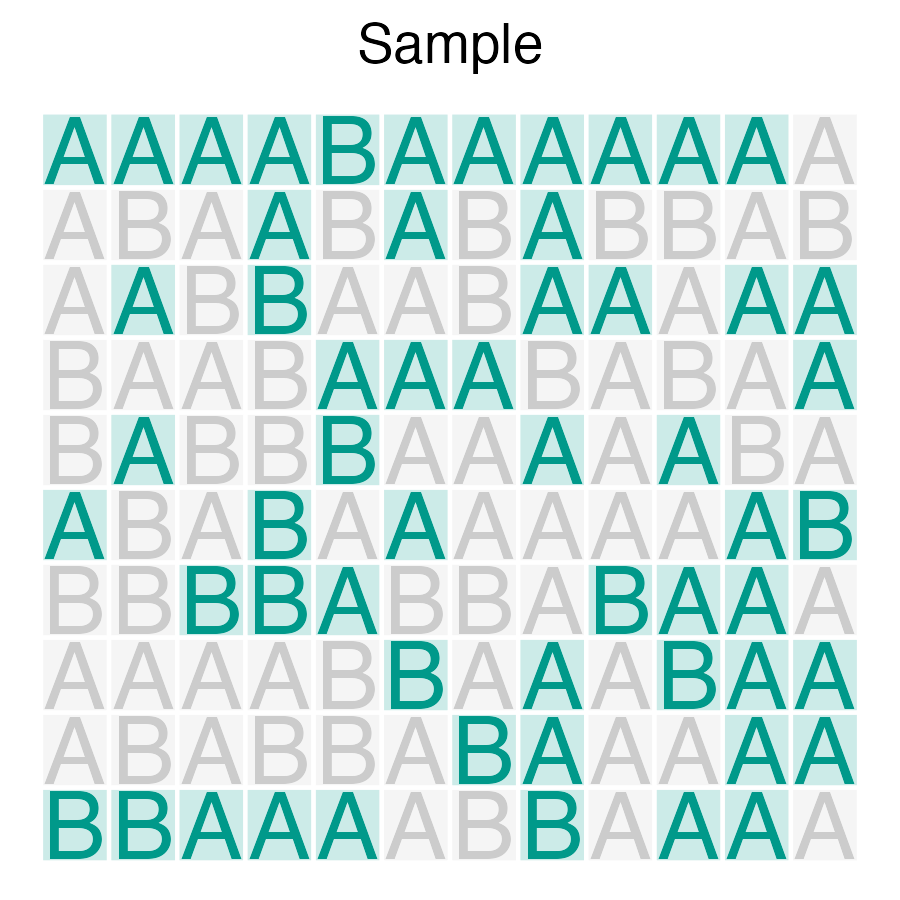
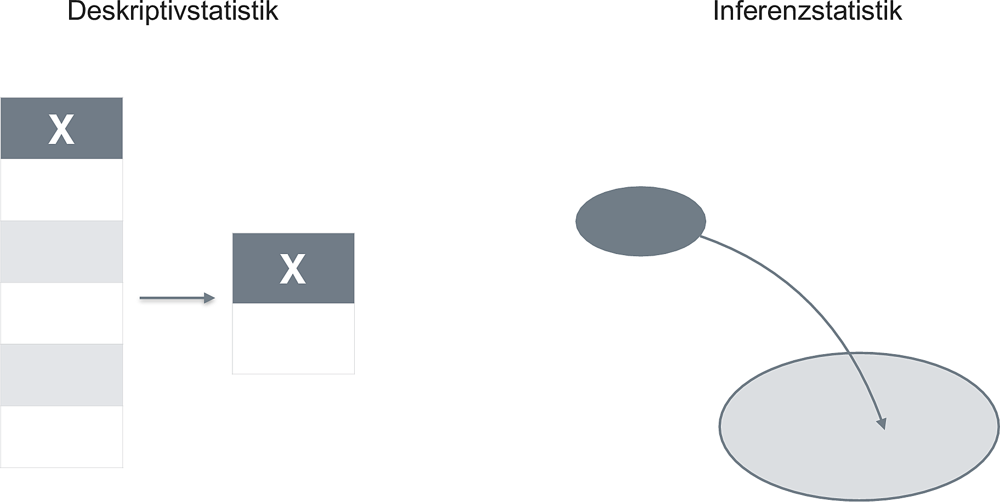
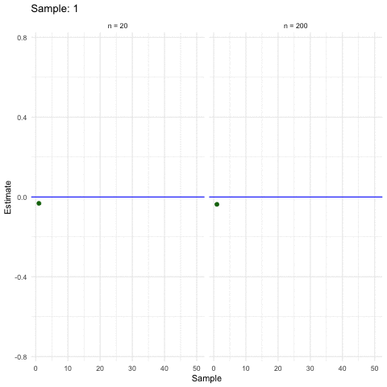
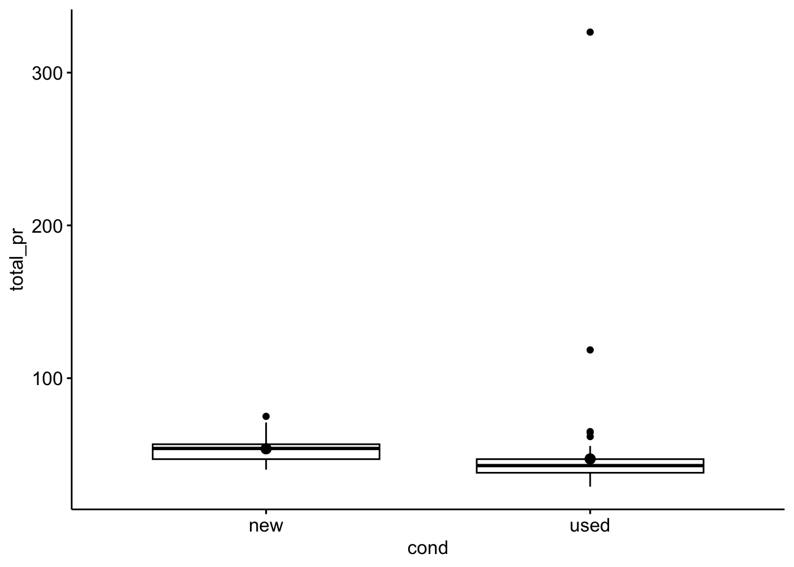
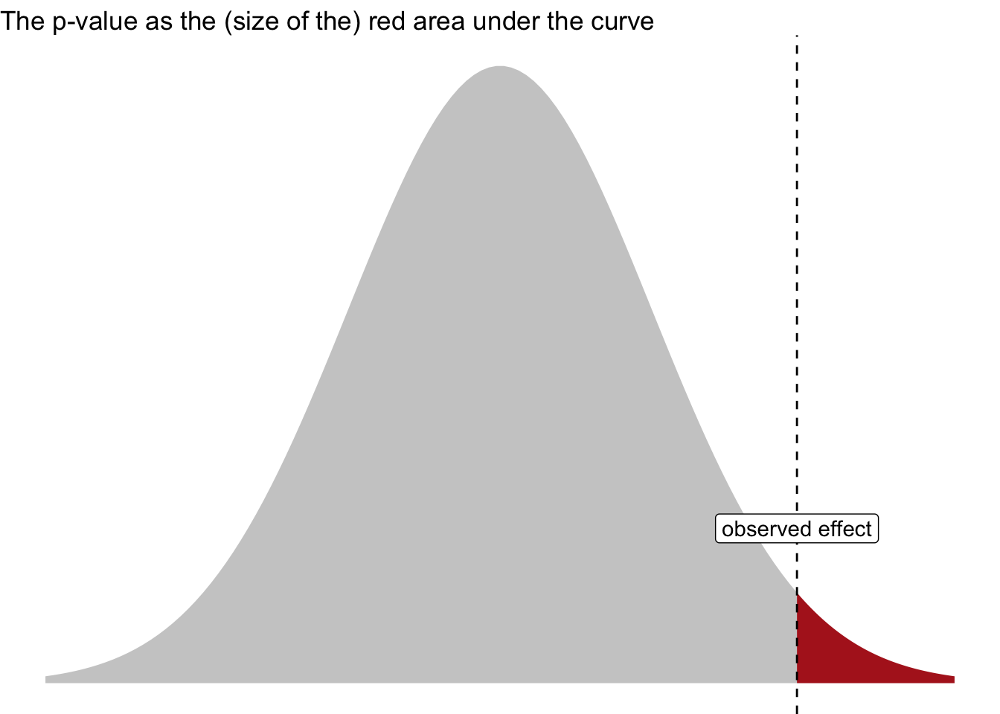

library(easystats) # make stats easy again
library(tidyverse) # data wrangling
library(ggpubr) # visualization3 Inference
Keywords
statistics, modelling, introduction, course, data analysis, R

3.1 R packages needed for this chapter
Make sure to run the following code chunks in order to start the neccessary R packages needed in this chapter.
3.2 What is it?
3.2.1 Generalizing from a sample to a population
Statistical inference, according to Gelman et al. (2021), chap. 1.1, faces the challenge of generalizing from the particular to the general.
In more details, this amounts to generalizing from …
- a sample to a population
- a treatment to a control group (i.e., causal inference)
- observed measurement to the underlying (“latent”) construct of interest
Important
Statistical inference is concerned with making general claims from particular data using mathematical tools.
3.2.2 Population and sample
We want to have an estimate of some population value, for example the proportion of A.
However, all we have is a subset, a sample of the populuation. Hence, we need to infer from the sample to the popluation. We do so by generalizing from the sample to the population, see Figure Figure 3.1.


3.2.3 What’s not inference?
Consider fig. Figure 3.2 which epitomizes the difference between descriptive and inferential statistics.

3.2.4 When size helps
Larger samples allow for more precise estimations (ceteris paribus).

3.2.5 Inference in a nutshell
Let’s look at a concrete example.
Here’s a research question:
Are the auction prices (
total_pr) of new Mariokart games higher than the auction prices for used ones (variablecondition)?
Of cource, we would like to know the answer to the research question with respect to the population, not just to the sample at hand. The sample at hand is known without any uncertainty. To the contrary, the exact value in the population is unknown. We use statistics to estimate it.
For a quick example, first load the Mariokart data set (see Listing 1.1)
mariokart <- read.csv( "https://vincentarelbundock.github.io/Rdatasets/csv/openintro/mariokart.csv")Now, let’s do INFERENCE STATISTICS! Voila:
my_inference_model <- lm(total_pr ~ cond, data = mariokart)
parameters(my_inference_model) |> print_md()| Parameter | Coefficient | SE | 95% CI | t(141) | p |
|---|---|---|---|---|---|
| (Intercept) | 53.77 | 3.33 | (47.19, 60.35) | 16.15 | < .001 |
| cond (used) | -6.62 | 4.34 | (-15.21, 1.96) | -1.52 | 0.130 |
The model estimates the “effect” of the “used” condition of approx. 6.6 Dollar. Used games cost on average about 6.6 Dollar less compared to new ones, according to this model.
The value at 95% CI shows us the 95% confidence interval (CI) (Frequentist flavor). The CI is an indication of the precision with which we estimate the parameter of interest. Values within the CI can be dubbed “plausible” values of the parameter of interest; values outside are “implausible”. Put shortly, the model thinks that the true effect in the population is somewhere between approx. -15 and +2 Dollar.
We also learn that zero is included in the CI of cond: That means that zero is plausible value for the effect of cond. Therefore, we cannot exclude the null/zero value/hypothesis.
For concreteness, here’s a visualization of the difference in total price between the groups.
ggboxplot(mariokart,
x = "cond",
y = "total_pr",
add = "mean_se")
3.3 What inference flavors are available?
Typically, when one hears “inference” one thinks of p-values and null hypothesis testing. Those procedures are examples of the school of Frequentist statistics.
However, there’s a second flavor of statistics to be mentioned here: Bayesian statistics.
3.3.1 Frequentist inference
Frequentism is not concerned about the probability of your research hypothesis.
Frequentism is all about controlling the long-term error. For illustration, suppose you are the CEO of a factory producing screws, and many of them. As the boss, you are not so much interested if a particular scree is in order (or faulty). Rather you are interested that the overall, long-term error rate of your production is low. One may add that your goal might not the minimize the long-term error, b ut to control it to a certain level - it may be to expensive to produce super high quality screws. Some decent, but cheap screws, might be more profitable.
3.3.2 Bayes inference
Bayes inference is concerned about the probability of your research hypothesis.
It simply redistributes your beliefs based on new data (evidence) you observe, see Figure Figure 3.3.
flowchart LR A(prior belief) --> B(new data) --> C(posterior belief)
In more detail, the posterior belief is formalized as the posterior probability. The Likelihood is the probability of the data given some hypothesis. The normalizing constant serves to give us a number between zero and one.
\[\overbrace{\Pr(\color{blue}{H}|\color{green}{D})}^\text{posterior probability} = \overbrace{Pr(\color{blue}{H})}^\text{prior} \frac{\overbrace{Pr(\color{green}{D}|\color{blue}{H})}^\text{likelihood}}{\underbrace{Pr(\color{green}{D})}_{\text{normalizing constant}}}\]
In practice, the posterior probability of your hypothesis is, the average of your prior and the Likelihood of your data.
Can you see that the posterior is some average of prior and likelihood?
Check out this great video on Bayes Theorem by 3b1b.
3.4 But which one should I consume?
PRO Frequentist:
- Your supervisor and reviewers will be more familiar with it
- The technical overhead is simpler compared to Bayes
PRO Bayes:
- You’ll probably want to have a posterior probability of your hypothesis
- You may appear as a cool kid and an early adoptor of emering statistical methods
Tip
You’ll learn that the technical setup used for doing Bayes statistics is quite similar to doing frequentist statistics. Stay tuned.
3.5 Lab
Consider your (most pressing) research question. Assess whether it is more accessible via Frequentist or via Bayesian statistics. Explain your reasoning.
3.7 p-value
The p-value has been used as the pivotal criterion to decide about whether or not a research hypothesis were to be “accepted” (a term forbidden in frequentist and Popperian langauge) or to be rejected. However, more recently, it is advised to use the p-value only as one indicator among multiple ; see Wasserstein & Lazar (2016)
Important
The p-value is defined as the probability of obtaining the observed data (or more extreme) under the assumption of no effect.
Figure Figure 3.4 visualizes the p-value.

3.8 Some confusion remains about the p-value
3.9 Exercises
ü뮂Äçüè´ Check-out all exercises from Datenwerk with the tag inference. For Bayesian inference, check out the tag bayes on the same website.
For example,
3.10 Case studies
3.11 Going further
Goodman (2008) provides an entertaining overview on typical misconceptions of the p-value full text. Poldrack (2022) provides a fresh, accessible and sound introduction to statistical inference; in addition Cetinkaya-Rundel & Hardin (2021) is a worthwhile treatise.
3.6 Comment from xkcd
Quelle